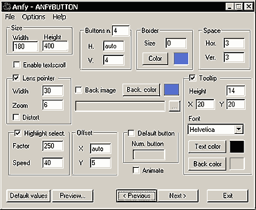
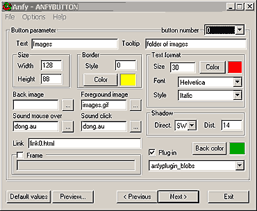

|
This applet provides a simple menu function with
4 choices of background effects, that is: simple colour, image,
blob animation or galaxy animation.
[For more technical
information about the available parameters, click here.]
Most parameters are self-explanatory and you can
always see brief description of each parameter by moving the mouse
pointer over the wizard.

Basic setting
Define the applet width and height,
and check enable textscroll optiopn, if you need. Select
background image, or background color.
General button setting
Now, decide how many buttons you need to place within
the appler area, and enter the number at Buttons n. field.
This is a total number of buttons shown. Next, just below the Buttons
n. field, find the fields named H and V, where you
could either let the wizard decide the numbers of both horizontally
and vertically aligned buttons by entering "auto",
or the actual numbers of your choice. You could set horizontal
and vertical spacing of buttons at Space group. You
could also set the XY offset of the applet area. If "auto"
is given to XY Offset parameters, the buttons are automatially centered.
Optionally, you could activate the default button selection, by
checking Default button box as well as entering the number
of the default button, which is selected as an active button at
the time of loading the applet.
Next, configure the applet's border style. The available
options are border size and border color. For no border,
border size must be 0 in value. If you want the buttons to be highlighted
upon selection, check the Highlight select box, and enter
the values for Highlight Factor (equal or greater than 100)
and Hightlight Speed (equal or greater than 0). There is
a Animate option which when enabled animates only selected
buttons.
There is a lens effect available. If you want to enable
it, select Lens pointer box, and give values to Lens Width
and Lens Zoom Factor. You may enable Lens Distort
option too.
Enable Tooltip option if necessary. This shows
up a tooltip message for each button. You could define Tooltip
Height, XY offset, Text color, Font, and
Background color.

Individual button setting
For every button, you need to choose a lot of additional
features. Each button is given a unique ID number starting from
0. This ID is called button number. Select a button number,
and fill out all the available options as shown above. You could
set Button Text, Tooltip message, Button Size
(Width, Height), Foreground and Background
images, Mouse-over and Mouse-down Sound FX files,
Button Links(URL, Frame), and Text format (size,
color, font, style).
There is a shadow effect for buttons. Select
the direction and the distance of the shadow. With
value 0 for the distance, the shadow effect is disabled.
Finally, you could select special effect for each
button from Plugin pull-down menu. Blobs, Water, Warp, and
Huerot effects are available for selection. For detailed instructions
for each effect, please refer to respective applets.
Now, please go to the
expert menu.
|